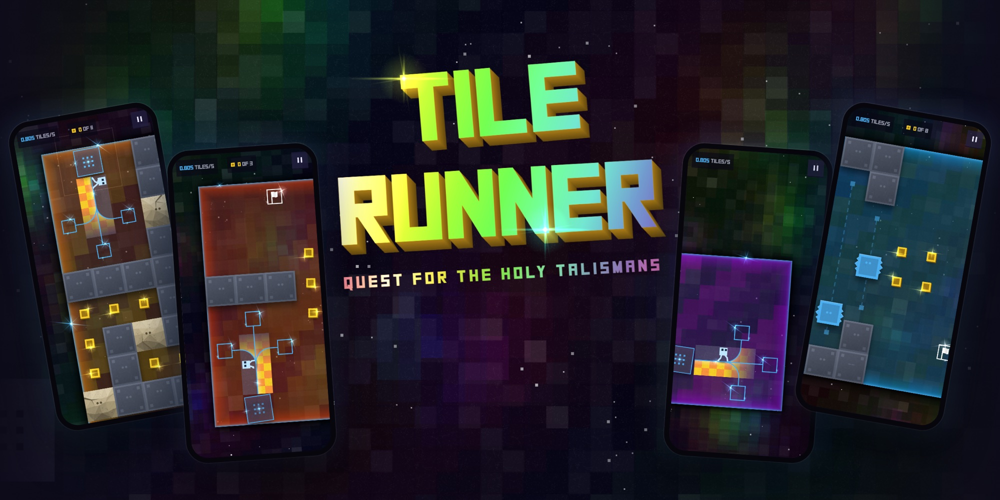

LV 08 · In production
Tile Runner
- Client
- Own project
- Role
- Designer & developer
- Year
- 2026
- Players
- 1
- Status
- In production
- HTML5 canvas
- Single-file web game
- Built with Claude Code
- Installs on iPhone
A retro-pixel puzzle runner: the runner never stops, and you have three tiles to keep laying track ahead of it.
The game
Tile Runner: Quest for the Holy Talismans is a puzzle game for phones, currently in production. The runner sets off and never stops. You have just three track tiles: as the runner clears each one it comes free, and you drag it to the front of the path to keep the track going and steer around walls, creatures and traps to the goal.
Gravity follows the track, so the runner runs sideways and upside-down as the path turns. There are 50 levels, and each new idea is taught through play. The whole game is a single HTML file with its own audio engine, and it installs on an iPhone home screen.
What I did
- Designed the core mechanic, all 50 levels and the way each new idea is introduced
- Built the whole game with Claude Code as a single HTML file: gameplay, art, audio engine and level editor
- Made a set of small lab tools to tune each system on its own, from the runner's movement to the music